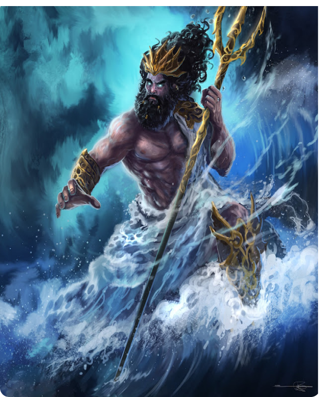

Genealogia do Poseidon:
Filho do Cronos e da Réia. Irmão da Zeus, Hades, Héstia, Hera e Deméter. Casado com a Anfitrite. Pai do Tristão, do Polifemo, do Belerofonte, do Árion, do Teseu, do Proteu, do Pégaso, do Telquines, do Asopo e da Despina.
Poseidon
Filho do Cronos e da Réia. Irmão da Zeus, Hades, Héstia, Hera e Deméter. Casado com a Anfitrite. Pai do Tristão, do Polifemo, do Belerofonte, do Árion, do Teseu, do Proteu, do Pégaso, do Telquines, do Asopo e da Despina.
Ele e seus irmãos derrotaram os titãs e tomaram o poder, assim se tormando o deus dos mares. Apesar de ser um dos deuses dos olímpicos, sua morada era em um palácio no fundo do mar. A personalidade do Poiseidon é ter um comportamento explosivo, humor difícil e é violento. Poseidon era o deus grego dos mares e dos rios. Os gregos consideravam que ele era responsável por catástrofes como enchentes e terremotos. Era filho de Cronos e Reia e foi resgatado do ventre de seu pai pelo seu irmão Zeus. Poseidon foi casado com uma nereida (filha de Nereu e de Dóris) chamada Anfitrite, Os mitos ainda mencionam que Poseidon teve cerca de 116 filhos e filhas, a maioria de envolvimentos fora de seu casamento, porém esses são os mais citados.
A ordem de nascimento de seus irmãos, segundo Pseudo-Apolodoro, é Héstia (a mais velha), seguida de Deméter e Hera, seguidas de Hades e Posídon o próximo a nascer, Zeus, foi escondido por Reia em Creta, que deu uma pedra para Cronos comer.
Filme: “Poseidon”, lançado em 2006.
Série/Livro: “Percy Jackson”, que ainda será lançada.
Livro: "O legado de Syrena".
Me chamo Ana Clara, tenho 15 anos, e estudo no IFSP. Sou uma pessoa muito extrovertida, extremamente irônica, me preocupo muito com quem eu gosto, e minha principal característica é rir de tudo. Gosto de estudar/ouvir música, faço aula no Conservatório Municipal de Guarulhos á 4 anos, amo jogar vôlei e futebol nos tempos livres.